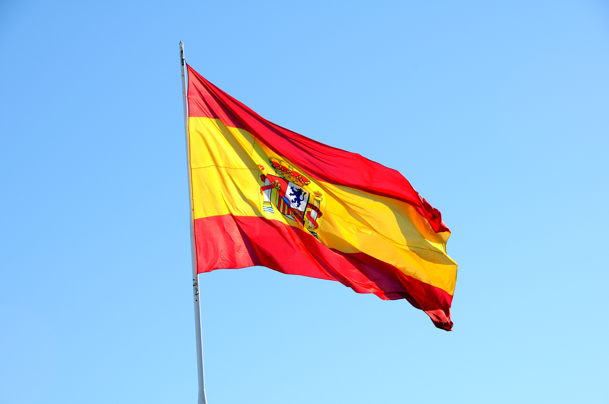
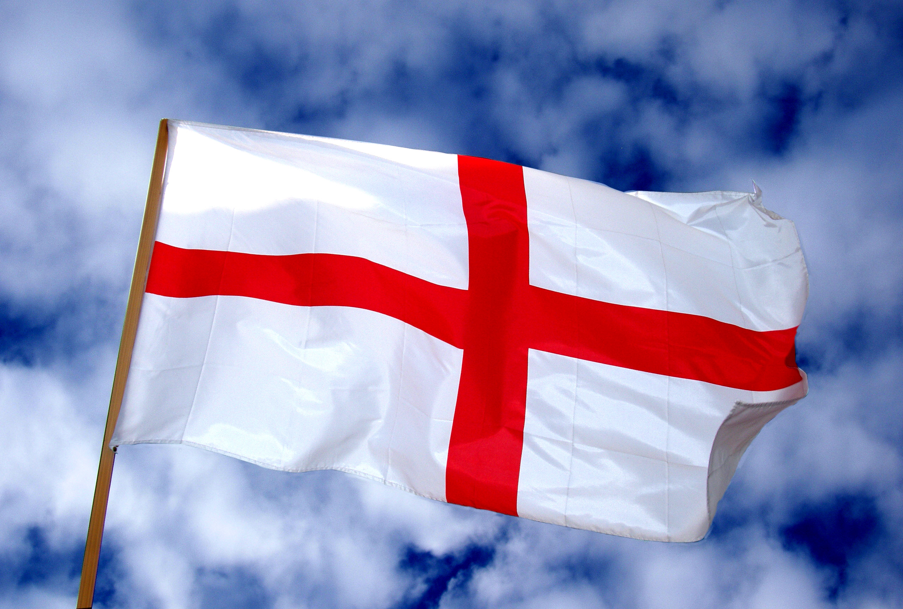
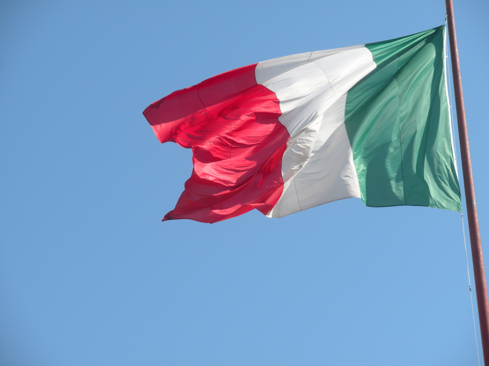
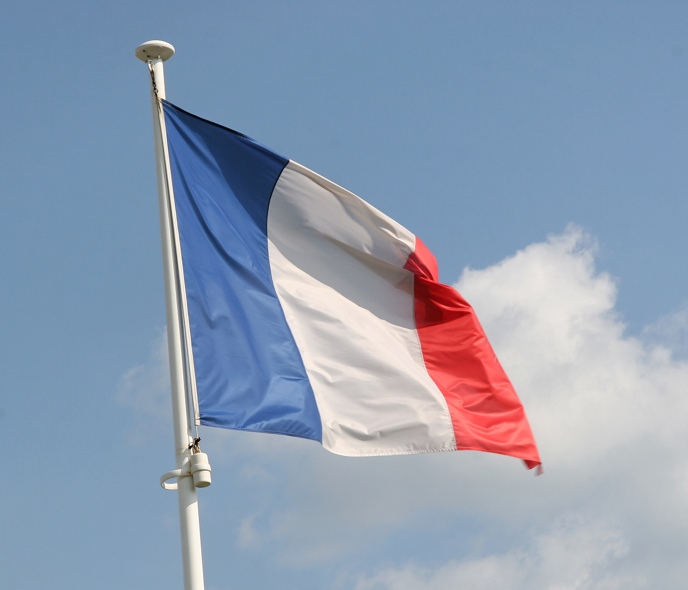

LaLiga - Spain
La Liga (Campeonato Nacional de Liga de Primera División) is the name of the Spanish football league and has existed since 1929. The first division is called Primera División (which is commonly referred to La Liga) and the second is called Segunda División. Since 1997 are 20 clubs participating in the top league of La Liga. Click here for more details
| League Position | Club | Matches Played | Wins | Draws | Losses | Points |
|---|---|---|---|---|---|---|
| 1. | Atlético Madrid | 38 | 26 | 8 | 4 | 86 |
| 2. | Real Madrid | 38 | 25 | 9 | 4 | 84 |
| 3. | Barcelona | 38 | 24 | 7 | 7 | 79 |
| 4. | Sevilla | 38 | 24 | 5 | 9 | 77 |
Premier League - England
The Premier League began in 1992 preceded by the First Division of the Football League that was founded in 1888. Today it holds the status of the best football league in the world. Even though the top clubs in England don’t win the biggest European Cups with same frequency as the top clubs in Spain, the Premier League is still considered to contain the toughest competition overall. (Premier League was earlier sponsored by Barclays Bank, thus the reason for its previous official name Barclays Premier League.) Click here for more details
| League Position | Club | Matches Played | Wins | Draws | Losses | Points |
|---|---|---|---|---|---|---|
| 1. | Man City | 38 | 27 | 5 | 6 | 86 |
| 2. | Man United | 38 | 21 | 11 | 6 | 74 |
| 3. | Liverpool | 38 | 20 | 9 | 9 | 69 |
| 4. | Chelsea | 38 | 19 | 10 | 9 | 67 |
Serie A - Italy
Serie A (Lega Nazionale Professionisti Serie A) is the name of the top Italian football league and has existed since 1898 and since 1929 as structured today. Since 1961, the winner gets the trophy called Coppa Campioni d'Italia. When the league was established it included 18 clubs, but since when it has decreased and expanded many times: from 16 as minimum to 21 clubs as maximum (since the 2004-2005 season, 20 clubs has been included). Today the division is also referred to Lega Serie A, or more commonly only Serie A. Click here for more details
| League Position | Club | Matches Played | Wins | Draws | Losses | Points |
|---|---|---|---|---|---|---|
| 1. | Inter | 38 | 28 | 7 | 3 | 91 |
| 2. | Milan | 38 | 24 | 7 | 7 | 79 |
| 3. | Atalanta | 38 | 23 | 9 | 6 | 78 |
| 4. | Juventus | 38 | 23 | 9 | 6 | 78 |
Bundesliga - Germany

In 1963, the Bundesliga, the top-tier of the German football league system was established by German Football Association (the league is since 2001 organized by Deutsche Fußball Liga). The most merited teams from the different German regions were for the first time in the grouped in one division. Click here for more details
| League Position | Club | Matches Played | Wins | Draws | Losses | Points |
|---|---|---|---|---|---|---|
| 1. | Bayern | 34 | 24 | 6 | 4 | 78 |
| 2. | RB Leipzig | 34 | 19 | 8 | 7 | 65 |
| 3. | Dortmund | 34 | 20 | 4 | 10 | 64 |
| 4. | Wolfsburg | 34 | 17 | 10 | 7 | 61 |
Ligue 1 - France
Ligue 1 has been the name of the top division in French football league since 2002, before that it was called Division 1. The league in its original form was first inaugurated in 1932, two years after professionalism in French football became legal. Click here for more details
| League Position | Club | Matches Played | Wins | Draws | Losses | Points |
|---|---|---|---|---|---|---|
| 1. | LOSC | 38 | 24 | 11 | 3 | 83 |
| 2. | PSG | 38 | 26 | 4 | 8 | 82 |
| 3. | Monaco | 38 | 24 | 6 | 8 | 78 |
| 4. | Lyon | 38 | 22 | 10 | 6 | 76 |